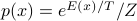
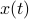
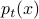
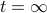
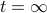
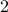

Session 3: Three meanings of probability and the approach to equilibrium
Articulate why it is easy to be misled by the multiple interpretations of probability in statistical mechanics.
We've spent the last two weeks discussing the Bolztmann distribution  – but how does it arise? What does probability even mean?
How a nerve fiber conducts electricity
A detailed biophysical picture as a concrete example:
Explain how the voltage-current response is measured and what it means.
Describe the observation of ‘gating’, with low conductivity at low voltage and high conductivity at high voltage. Analogy of a pressure-dependent valve which controls the flow in a pipe.
Illustrate the lag time for channels to open following a voltage jump
Experimental details of a thin glass capillary isolating a small patch of the membrane. Note how, if the patch of membrane is small enough, you may isolate an individual receptor!
Sketch the time trace of current flowing through a single channel — and notice how, unlike the macroscopically observed case, there are stochastic, discrete transitions between an open state and a closed state. Surmise on the origin of this random-looking behavior.
Draw the full ensemble of thousands of such single-channel traces — how ions flow through a large membrane patch containing many many channels!
numbers for reference: million-billion ions per second through one channel (in the picoamp to nanoamp range), and roughly 100-1000 channels per square micron of membrane
The three notions of probability
From this example we can see different notions of probability:
One is the time average of a single ion channel over a long time
Second is the population average over all the channels in the patch
Third is the abstract, ‘phase space’ average we have been discussing in terms of the microscopic states!
Discussion: when are these equivalent? When are they not? Which defintion should we be using and when? What is the justification for the phase space picture?
Link back these discrete transitions to the A / B partition of phase space we have been using, and some notion of a stochastic trajectory…
but point out the absurdity of defining a probability distribution over thousands of variables, if the space is so large that a miniscule portion of it will ever be sampled!
Basic Markov Chains
Time permitting, we can discuss the mathematical description of the situation:
note how the time average picture lends itself to  whereas the population average leads to . Different meaning !!
dwell times and transition rates, the memory-less assumption, basic differential equation, steady-state solution as the ratio of rate constants, relation to the equlibrium constant…
Think about “initial state” as the situation at
 , and the consequent evolution to steady state at , with a characteristic “relaxation time” for the approach to equilibrium.
, and the consequent evolution to steady state at , with a characteristic “relaxation time” for the approach to equilibrium.and generalize from  states to
 states. define a transition matrix and draw the Markov Chain. Give the analogy of probability as an incompressible fluid flowing through the nodes. Steady state is more tricky – now for each of the states, the mass flowing in has to be equal to the mass flowing out. Stationary distribution is the -eigenvector, relaxation time is the largest nonzero eigenvalue. Draw out some simple examples of different dynamics, from different starting points!
states. define a transition matrix and draw the Markov Chain. Give the analogy of probability as an incompressible fluid flowing through the nodes. Steady state is more tricky – now for each of the states, the mass flowing in has to be equal to the mass flowing out. Stationary distribution is the -eigenvector, relaxation time is the largest nonzero eigenvalue. Draw out some simple examples of different dynamics, from different starting points!